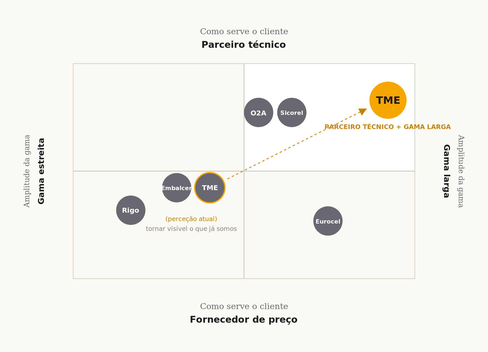

A fundação da marca TME, reunida para consulta. Desde 1956 ao lado de quem produz, constrói e embala.
A TME importa, transforma e comercializa fitas e espumas autoadesivas técnicas desde 1956, e serve atualmente cerca de mil clientes B2B em Portugal. A maior parte do que comercializa é adquirida a fabricantes e transformada internamente, não produzida de raiz.
Desde 1956 a servir a indústria. Importa, transforma e corta à medida. Cerca de mil clientes B2B. Uma equipa técnica que trabalha no terreno.
Uma marca pouco visível online, com um site desatualizado e uma perceção herdada de fornecedor caro. A compra mudou: começa no Google e nos assistentes de inteligência artificial.
O que distingue a TME não é o produto. É a própria TME.
O aconselhamento técnico, a fiabilidade, a disponibilidade de stock e a proximidade de uma equipa que conhece o terreno em que os clientes operam.
Nenhuma referência do mercado reúne, em simultâneo, aconselhamento técnico próximo, forte disponibilidade de stock e entregas rápidas em todo o país.
A TME é a única que combina amplitude e proximidade, com transformação à medida e disponibilidade de stock.
O território define-se por dois eixos: a forma como a TME serve o cliente e a amplitude da gama. O quadrante do parceiro técnico com gama larga está por ocupar. É onde a TME já opera na prática, e cabe à marca torná-lo visível.

A TME já vive no canto certo. Falta torná-lo visível.
A essência é a verdade central de onde tudo o resto decorre. É o único elemento da estratégia que pode chegar ao cliente tal como está, sob a forma de assinatura.
O saber que mantém tudo em movimento.
Existimos para que ninguém pare.
Transformamos a incerteza de uma escolha técnica na confiança de ter sempre a solução adesiva certa e alguém em quem confiar, ao lado de quem produz, constrói e embala.
Aconselhar cada cliente e encontrar a solução adesiva tecnicamente certa, transformada à medida e entregue de forma atempada, com uma equipa técnica no terreno e uma presença digital crescente, para que nenhuma linha pare, nenhuma obra atrase e nenhuma encomenda chegue danificada.
A especialidade encontra-nos online, e a perceção de fornecedor caro começa a corrigir-se.
A referência nacional de confiança em soluções adesivas técnicas, escolhida pelo aconselhamento e pela fiabilidade.
O nome que mantém a indústria em movimento, de forma sustentável.
Aconselha. Explica o porquê antes do quê. Encontra a solução certa e antecipa o problema. Ensina, mas nunca dá lições nem faz o cliente sentir-se ignorante.
Garante. Ninguém fica parado à espera. Protege o compromisso que o cliente assumiu com o cliente dele. Serve, mas não se submete nem diz sim a tudo.
Sábio e Cuidador: o especialista de confiança. Sério mas humano, próximo mas profissional, claro e direto.
Resolve problemas em vez de tirar pedidos. A prova é o diagnóstico técnico logo na primeira visita.
Forte disponibilidade de stock e entregas rápidas, face a fornecedores que rompem ou demoram.
Pessoas que vão à fábrica e à obra, ao contrário dos operadores online sem rosto.
Vários setores e transformação própria, onde os nichos e os generalistas sem técnica não chegam.
Investir no saber e em quem aconselha: formação, fichas e diagnóstico padronizado.
Gerir stock e prazos como promessa, com alertas proativos de rutura.
Estar no terreno e prever a próxima necessidade.
Manter a amplitude e a transformação como vantagem. Setenta anos ao serviço de hoje, modernizando os canais, não a alma.
Seis princípios orientam as decisões e moldam a cultura.
Saber profundo em soluções adesivas que permite aconselhar cada cliente com autoridade e precisão.
Resolver o problema do cliente acima da venda, com proximidade, disponibilidade e proatividade.
Cumprir compromissos, com stock, prazos e entregas, para que a produção nunca pare por falha nossa.
Verdade e transparência em tudo, incluindo o preço justificado, com coerência entre promessa e entrega.
A recusa de nos acomodarmos, enquanto empresa e enquanto pessoas, sem perder o que nos torna de confiança.
Responsabilidade ambiental, social e de gestão assumida com honestidade, sem vender como verde o que ainda não é.
A oferta organiza-se por função, ou seja, pelo trabalho que o cliente precisa de resolver, tendo o setor como porta de entrada. Cada família pertence a uma única função.
Conter e apresentar.
Amortecer e preservar.
Selar e isolar.
Unir e segurar.
As espumas classificam-se pelo número de faces adesivas: uma face para Isolamento e Vedação, duas faces para Fixação. A navegação faz-se por função e os catálogos comerciais por setor.
As personas não são públicos separados, mas os elementos da unidade de decisão de uma venda B2B. A marca dirige-se aos três de formas distintas.
Responsável de compras de empresas industriais médias. É avaliado pelo custo, mas decide por desempenho fiável. Pesquisa no Google e em IA antes de contactar.
Lojas de construção, tintas e ferramentas, com força no interior. Dá escala à TME. Vive da margem e da relação, e teme ser contornado.
Quem usa o produto no terreno, seja o operador, o instalador ou o chefe de produção. Não decide a compra, mas se disser que não funciona, a recompra deixa de acontecer.
A voz não é nova. É a estratégia a falar, e nasce do arquétipo Sábio e Cuidador. A regra de ouro é simples: ensina sem arrogância e serve sem subserviência.
Um consultor técnico veterano da indústria. Fala claro, resolve rápido, conhece cada linha de produção. Nunca deixa ninguém parado.
É a marca personificada, não uma pessoa da equipa. A fasquia é alta, o tom é humano.
Usa verbos de ação imediata. Quantifica prazos e cumpre-os. Nomeia aplicações concretas. Oferece alternativas técnicas fundamentadas. Confirma o entendimento antes de avançar.
Superlativos de marketing. Explicações que se alongam. Promessas que não pode garantir. Ignorar a urgência. Tratar o cliente como uma transação única.
O comprador industrial desconfia do exagero. A autoridade ganha-se com o concreto, não com adjetivos.
Uma hora parada custa mais do que a diferença de preço.
A TME não compete no mais barato, compete no custo da paragem. O serviço mostra-se antes da relação, com diagnóstico na primeira visita, casos e amostras com QR.
A TME transforma soluções adesivas técnicas em certezas para a indústria portuguesa. Com 70 anos de experiência e aconselhamento no terreno, é o parceiro que domina a técnica, entrega com fiabilidade e está ao lado de quem produz, quando a produção não pode parar.
A sua produção não pode esperar por dúvidas ou atrasos.
Diga-nos o desafio. Encontramos a solução que mantém a sua operação em movimento.
A sua linha não pode parar por falta de material. Com a TME, tem aconselhamento técnico, forte disponibilidade de stock e entregas rápidas.
O fornecedor que fortalece o seu negócio e nunca o contorna: condições justas, reposição fiável, formação e apoio na venda. Crescemos juntos.
Produtos que funcionam à primeira e são fáceis de aplicar. Instruções claras, amostras para testar, e alguém que ouve a sua experiência no terreno.
Não vendemos apenas produtos. Entregamos conhecimento, com equipas que visitam as instalações e transformam desafios complexos em soluções certas à primeira.
Forte disponibilidade dos produtos mais críticos e entregas rápidas, porque cada hora parada custa dinheiro e reputação.
Existimos para que a indústria produza sem interrupções por falhas adesivas. Somos o elo invisível que mantém as cadeias em movimento.
Quando surge uma dúvida ou uma urgência na linha, a TME responde com a rapidez que a situação exige. Proximidade não é um slogan.
Modernizamo-nos continuamente, sem perder o que nos torna de confiança. A energia da nova geração ancorada em 70 anos.
A mesma verdade em três registos: para a equipa, para os clientes e para a indústria.
Somos a TME porque sabemos. Sabemos que por trás de cada linha de produção há pessoas que não podem falhar, prazos que têm de ser cumpridos, compromissos que pesam. E é por isso que estamos aqui, não para vender fita adesiva, mas para garantir que nada pára.
O nosso saber não vem de catálogos. Vem de 70 anos no terreno, de conversas técnicas, de problemas resolvidos às 17h30 de sexta-feira, de entregas que chegaram a tempo. Vem de cada um de nós, da experiência que partilhamos, da atitude que trazemos e da vontade de resolver que nos move.
Não somos os maiores, mas somos os que percebem. Os que atendem. Os que entregam. Os que ficam até encontrar a solução certa. Evoluímos todos os dias, como empresa e como pessoas, sem perder a alma. Juntos, mantemos a indústria portuguesa em movimento. Não com promessas, mas com presença, competência e compromisso.
Não somos os maiores, mas somos os que percebem, atendem, entregam e ficam até resolver.
A sua produção não pode parar. A sua obra não pode atrasar. A sua encomenda não pode chegar danificada. E é por isso que a TME existe.
Há 70 anos que transformamos soluções adesivas técnicas em certezas para a indústria portuguesa. Não vendemos produtos. Entregamos tranquilidade. Porque quando nos escolhe, escolhe alguém que domina a técnica, aconselha com autoridade e cumpre o prometido.
Cada aplicação é diferente. Cada desafio é único. Por isso não oferecemos respostas genéricas. Ouvimos, analisamos e recomendamos a solução tecnicamente certa, transformada à sua medida e entregue com prontidão. A TME é esse parceiro. Mais pelo saber do que pela dimensão. Mais pela capacidade de resolver do que pelo catálogo.
Não vendemos produtos. Entregamos tranquilidade. Porque quando nos escolhe, escolhe quem domina, aconselha e cumpre.
A indústria portuguesa move-se sobre milhares de decisões técnicas invisíveis. Uma delas, aparentemente simples e muitas vezes subestimada, é a escolha da solução adesiva certa. Quando falha, linhas param, obras atrasam, encomendas chegam danificadas e custos disparam.
A TME existe para transformar essa escolha numa certeza. Durante 70 anos, construímos algo raro: autoridade técnica combinada com serviço de proximidade. Não somos distribuidores transacionais, mas conselheiros técnicos que garantem continuidade operacional à indústria nacional.
Até 2036, queremos ser uma referência nacional em soluções adesivas técnicas sustentáveis, não pela quota de mercado, mas pela confiança conquistada. Conhecidos não pelo que vendemos, mas pelo que sabemos.
Transformamos 70 anos de experiência em inovação de serviço, devolvendo à escolha técnica o valor da sabedoria aplicada.
A fundação já permite arrancar, sem depender de novo investimento em imagem.
Equipa formada. Materiais, propostas e assinaturas na nova voz. Presença no Google tratada. Planear o novo site com a Fullscreen.
LinkedIn ativo com casos. Primeiros casos reais documentados. Guias para a equipa comercial. Vídeos de aplicação com QR nas amostras.
SEO, parcerias e medição. Alertas proativos de reposição. E o terreno pronto para a identidade visual quando o orçamento permitir.
Soluções adesivas técnicas para quem não pode parar. Aconselhamento no terreno, forte disponibilidade de stock e entregas rápidas, há 70 anos ao lado da indústria portuguesa.
Linha de montagem parada por uma fita que não aguenta 180 graus? Ontem um cliente ligou às 17h30. Esta manhã a equipa estava na fábrica com a alternativa certa. Especificar bem o adesivo evita a paragem, e uma paragem custa sempre mais do que a diferença de preço.
Perfil de Google Business completo e primeira publicação de LinkedIn com um caso de sucesso.
Fichas técnicas dos produtos mais vendidos, propostas e assinaturas com a nova voz.
Página de corte à medida e três casos de cliente documentados.
Amostras com QR Code que abrem vídeos de aplicação.